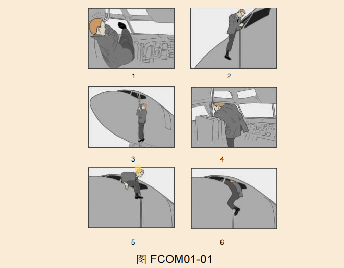

2023华东题库(2069题)
201~400
13007
湿跑道的等效值为跑道上覆盖应不超过多少毫米的积水：
A、2毫米的积水
B、3毫米的积水
C、4毫米的积水
D、5毫米的积水
B
13008
关于干跑道的起飞距离TOD描述正确的是：
A、从松刹车开始到飞机高于起飞表面35Ft 一点所经过的水平距离
B、从松刹车开始到飞机高于起飞表面50Ft 一点所经过的水平距离
C、从松刹车开始到飞机高于起飞表面400Ft一点所经过的水平距离
D、从松刹车开始到飞机高于起飞表面1000Ft一点所经过的水平距离
A
13009
关于湿跑道的起飞距离TOD描述正确的是：
A、从松刹车开始到飞机高于起飞表面15Ft 一点所经过的水平距离
B、从松刹车开始到飞机高于起飞表面35Ft 一点所经过的水平距离
C、从松刹车开始到飞机高于起飞表面400Ft一点所经过的水平距离
D、从松刹车开始到飞机高于起飞表面1000Ft一点所经过的水平距离
A
13010
起飞航迹以形态、推力、和速度的显著变化为特点可以被划分为几个航段：
A、1、
B、2、
C、3、
D、4、
D
13011
起飞的第一阶段是指什么：
A、飞机离地到起落架收上阶段
B、起落架收上到加速高度阶段
C、加速高度到光洁形态阶段
D、光洁形态到最后爬升航段
A
13012
起飞的第二阶段是指什么：
A、飞机离地到起落架收上阶段
B、起落架收上到加速高度阶段
C、加速高度到光洁形态阶段
D、光洁形态到最后爬升航段
B
13013
起飞的第三阶段是指什么：
A、飞机离地到起落架收上阶段
B、起落架收上到加速高度阶段
C、加速高度到光洁形态阶段
D、光洁形态到最后爬升航段
C
13014
起飞的第四阶段是指什么：
A、飞机离地到起落架收上阶段
B、起落架收上到加速高度阶段
C、加速高度到光洁形态阶段
D、光洁形态到最后爬升航段
D
13015
依据法规规定，双发飞机起飞后最低改平加速高度是多少：
A、400Ft
B、800Ft
C、1000Ft
D、1500Ft
A
13016
关于单发加速高度必须同时满足的条件，下列说法错误的是
A、至少超过 400 ft AGL
B、保证净飞行航迹高于障碍物 35 ft
C、保证不会超过起飞推力使用时间限制.
D、单发加速高度为跑道标高加1500ft
D
13017
关于最大连续推力MCT定义叙述正确的是：
A、只是为了保证安全飞行（一发停车）需要时由飞行员自行决定使用。
B、在双发正常的情况下，不允许使用MCT
C、为了安全飞行双发限制5分钟
D、为了保证安全飞行单发/双发都是10分钟
A
13018
V1 与Vmcg的关系，正确的是：
A、大于或等于
B、小于或等于
C、V1小于Vmcg
D、最小V1等于1.05倍Vmcg
A
13019
起飞后，下列哪项不会影响飞机重心变化：
A、服务人员走动
B、旅客座位的变动
C、燃油消耗以及起飞后起落架的收上，襟翼的收上
D、改变高度层
D
13020
对于特定跑道，由于ASD的限制，随重量的增加，V1/Vr变化正确的是：
A、减少
B、增加
C、先增加后减小
D、无变化
A
13021
对于特定跑道，由于受第2阶段的限制，随重量的增加，V2变化正确的是：
A、减少
B、增加
C、先增加后减小
D、无变化
B
13022
从飞机高于起飞表面120米（400英尺）的一点开始，沿起飞航迹每一点的可用爬升梯度不得小于多少：
A、1%双发飞机
B、1.2%双发飞机
C、1.4%双发飞机
D、1.6%双发飞机
B
13023
起飞爬升阶段，起落架在收上位置时保持V2速度的爬升梯度不得少于：
A、1.2%双发飞机
B、1.4%双发飞机
C、2%双发飞机
D、2.4%双发飞机
D
13024
起飞最后阶段，飞机爬升梯度不得少于：
A、1.2%双发飞机
B、1.4%双发飞机
C、2%双发飞机
D、2.4%双发飞机
A
13025
单发爬升性能，除非在RTOW表中另有说明外，当特定的程序要求转弯时最大坡度不超过多少：
A、15°
B、20°
C、25°
D、30°
A
13026
飞机着陆的实际距离是从飞机到跑道入口多少（）高度开始测量的。
A、50 英尺高
B、40 英尺高
C、30 英尺高
D、0 英尺高
A
13027
将最大结构起飞重量与按给定条件计算确定的最大许可起飞重量相比较
A、取两者中较大值
B、取两者中较小值
C、取两者中间值
D、
B
13028
以下哪个不是最大巡航高度的变化的影响因素。
A、重量
B、温度
C、磁差
D、马赫数
C
13029
其他同等条件下，最大巡航高度变化随重量影响的关系是。
A、随重量增加而减小
B、随重量增加而增大
C、没有显著关系
D、随重量增加保持不变
A
FCOM01001
B737-800，带有翼尖小翼的机翼翼展为 。
A、35.79米
B、39.50米
C、34.4米
D、
A
FCOM01002
B737-300，地面滑行180°转弯所需的最小道面宽度为
A、19.81米
B、24.3米
C、20.4米
D、
A
FCOM01003
紧急出口灯电门在“ARMED”位时，什么情况下所有应急灯自动打开?
A、只有当飞机的交流电源被关断时
B、只有当飞机电源向1号直流汇流条的供电失效时
C、当飞机的交流电源关断或1号直流汇流条电源失效时
D、当飞机电源向1号和2号直流汇流条的供电同时失效时或飞机的交流电源被关断时
C
FCOM01004
有DC电源的情况下，机翼上的翼上出口在什么条件下机械锁住？
A、四个登机门/服务门中的三个已关闭
B、任意一台发动机工作
C、飞机的空地逻辑指示飞机在空中或者两个推力手柄前推
D、其他选项的所列条件都须满足
D
FCOM01005
应急出口灯未预位（NOT ARMED）灯何时亮?
A、只有当应急出口灯电门在“OFF”位时
B、只有当应急出口灯电门在“ON”位时
C、当应急出口灯电门护盖盖下时
D、应急出口灯电门不在预位位
D
FCOM01006
当后乘务员面板的紧急出口灯电门在“ON”位时，驾驶舱的紧急出口灯电门护盖盖好，空地逻辑电门 IN AIR，请判断应急灯光的工作状态：
A、应急灯光灭
B、应急灯光亮起
C、应急灯光部分亮起
D、需空地逻辑电门探测接地后应急灯光亮起
B
FCOM01007
关于紧急出口灯（EMER EXIT LIGHTS） 开关位置，以下说法哪项是正确的？
A、如果1号交流转换汇流条失效，ARMED 位将使所有的应急灯亮。
B、如果飞机电气系统失效或者飞机断电，OFF 位将阻止应急灯光系统工作。
C、ON 位只提供驾驶舱应急灯光照明
D、ON 位只提供厨房应急灯光照明
B
FCOM01008
头顶面板上琥珀色的左翼上出口（LEFT OVERWING） 指示灯亮起，指示：
A、相关的大翼应急出口没有完全关上并锁定，或者起飞滑跑或者飞行中，相关的飞行锁没有接通。
B、大翼撤离滑梯没有预位
C、相关的大翼应急出口被关上并锁定
D、根据指令相关的飞行锁接通
A
FCOM01009
驾驶舱准备时应该检查和确认哪些应急设备？
A、灭火瓶、逃生绳、应急斧、防烟眼镜、救生背心、PBE、手电筒
B、手提式氧气瓶、应急发射机、防烟眼镜、逃生绳、应急斧
C、灭火瓶、水灭火瓶、逃生绳、应急斧、防烟眼镜、PBE
D、
A
FCOM01010
根据机上应急设备分布，当空中乘务员报告说客舱中有纸张起火，她应该使用以下哪种类型的灭火器？
A、氧化氮（N2O）
B、水（H2O）
C、BCF（Halon 1211）
D、二氧化碳（CO2）
B
FCOM01011
驾驶舱的“紧急出口灯”电门在“OFF”位且客舱的“紧急出口灯”电门在 “ON”位，飞机的应急灯：
A、不论机上是否有正常电源都不会亮
B、所有的应急灯会亮
C、所有的应急灯都处于预位状态
D、如果失去正常电源，则驾驶舱的应急灯不会亮，仅客舱的应急灯亮
B
FCOM01012
如正常电源失效， 会自动向备用罗盘灯、圆顶灯、仪表泛光灯等供电。
A、备用直流汇流条
B、直流汇流条
C、交流转换汇流条
D、
A
FCOM01013
在有正常电源的情况下，机翼上紧急出口的飞行锁锁定或开锁是由什么决定的？
A、发动机转速、推力手柄位置、空/地方式、襟翼形态和各舱门的开/关状态
B、发动机转速、推力手柄位置、起落架手柄位置、空/地方式、襟翼形态和各舱门的开/关状态
C、发动机转速、推力手柄位置、空/地方式和各舱门的开/关状态
D、发动机转速、推力手柄位置、空/地方式、空速、和各舱门的开/关状态
C
FCOM01014
如果对A类火警(木质等纤维物品)使用海伦灭火瓶(HALON1211), 效果不如水灭火瓶。
A、正确
B、错误
C、两种灭火设备使用时效果可视为一样。
D、
A
FCOM01015
在空中和地面都可以从驾驶舱内打开左右两侧2号风挡？
A、对
B、错
C、仅能打开右侧2号风档
D、
A
FCOM01016
在地面，可以从飞机外部打开左右两侧2号风挡，这个说法是否正确
A、正确
B、错误
C、仅能从飞机外部打开左侧2号风档
D、
B
FCOM01017
在驾驶舱内实施灭火瓶灭火前，__应戴上氧气面罩，并选择__方式以获得100％的纯氧。
A、驾驶舱所有成员；正常/100%电门至100%位
B、驾驶舱必须成员；正常/100%电门至100%位
C、驾驶舱所有成员；应急/按压测试选择电门选择紧急氧气，正常/100%电门至100%位
D、驾驶舱必须成员；应急/按压测试选择电门选至应急位
C
FCOM01018
驾驶舱中，飞行组氧气压力表位于__？
A、机长座位后面的P－18板上
B、副驾驶座位后面的P－6板上
C、飞行机组氧气关断活门上
D、后顶板
D
FCOM01019
驾驶舱中，飞行组氧气压力需要达到 ？
A、1850PSI
B、1500PSI
C、必须依据手册，根据温度、气压高度来判断压力是否满足放行。
D、
C
FCOM01020
客舱内，旅客氧气面罩提供的是__。
A、100％的氧气
B、氮气和氧气混合氧
C、空气和氧气的混合气体
D、根据旅客氧气面罩混合活门调节供给100%氧气或者空气氧气混合
A
FCOM01021
客舱内旅客氧气系统启动供氧后，如何关掉供氧（非高高原机型）?
A、取下面罩即可
B、按压旅客氧气系统复位电门
C、按压旅客氧气关断电门
D、无法关掉
D
FCOM01022
B737机型，客舱内旅客氧气系统由什么供氧?
A、由各旅客服务组件处上独立的化学氧气发生器提供/位于后货舱的氧气源提供氧气（根据选型不同）
B、由在E／E舱处的一个独立的化学氧气发生器供氧
C、由在客舱里的一个独立的化学氧气发生器供氧
D、由在每一个旅客服务组件处的独立的氧气瓶供氧
A
FCOM01023
当在氧气面罩/调节器上选择紧急位（EMERGENCY）位时，飞行机组氧气面罩：
A、只有高高度时提供100%氧气
B、在任何机舱高度均以正压力提供100%氧气
C、测试提供给调节器的正压力
D、根据需要提供外界空气和氧气的混合气
B
FCOM01024
飞行中，驾驶舱旅客氧气接通（PASS OXY ON）灯亮说明什么?
A、旅客氧气系统有故障，不能自动放下
B、旅客氧气系统由于有故障而自动放下了
C、旅客氧气系统正在工作，面罩已脱落
D、旅客氧气系统自动放下功能失效，要求人工放下
C
FCOM01025
机组氧气面罩/调节器上的“NORMAL/100％”电门放在“NORMAL”位，氧气面罩提供的是__？
A、100％的氧气
B、空气和氧气的混合气体(固定比例)
C、空气和氧气的混合气体(比例随座舱高度的改变而变化)
D、不论吸气与否，都会提供固定流量的100％的氧气
C
FCOM01026
旅客氧气面罩落下后，氧气何时开始供给?
A、面罩一掉出就开始供氧
B、当组件中的任何一个面罩向下拉动时
C、当按压供氧电门时
D、当驾驶舱里的“旅客氧气”电门放到“ON”位时
B
FCOM01027
驾驶舱飞行组氧气系统的最大压力可达__PSI?
A、1500
B、1800
C、1850
D、1950
C
FCOM01028
驾驶舱的机组氧气来源是：
A、化学氧气发生器
B、氧气瓶
C、氧气发生器
D、根据公司选型，上述氧气来源都有可能
B
FCOM01029
客舱中，当机舱高度低于14000 英尺，但高于10000英尺，且存在有烟雾或者不正常的热源时，不要使用旅客氧气
A、对
B、错
C、机长决定
D、
A
FCOM01030
旅客通过氧气面罩吸入的是100％的纯氧，因此让旅客使用氧气面罩可以避免旅客吸入烟雾：
A、对
B、错
C、供氧方式决定
D、无法判断
B
FCOM01031
捏红色夹子将氧气面罩拉出后，挤压氧气面罩充气手柄，以下说法错误的是 。
A、当面罩充气后，瞬间地触发氧气流量黄色的十字指示
B、面罩锁定在各自的收藏位
C、释放氧气并激活麦克风
D、氧气面罩头套充气
B
FCOM01032
在机组氧气面罩面板上的氧气流量指示器里出现黄色十字，表明:
A、氧气正在流动
B、面罩不能释放氧气
C、面罩里可能有故障
D、
A
FCOM01033
按压机组氧气面罩板上的“复位/测试”按钮，以下说法不正确的是 ？
A、如氧气面罩已收起，瞬时开启氧气，以测试调节器
B、提供100%的纯氧
C、如氧气面罩未收起，断开氧气和内话。松开电门后“OXY ON”旗消失
D、
B
FCOM01034

如图FCOM01-02所示，波音建议的的驾驶舱座椅调节要求为：
A、看遮光板的上表面时，有一小部分的飞机机头结构可见
B、沿着驾驶杆的上部看时，应看到外侧显示组件底部边缘
C、其他选项均应满足
D、
C
FCOM01035
驾驶舱2号风挡可以在__打开。
A、驾驶舱内
B、驾驶舱外
C、驾驶舱内外均可以
D、在驾驶舱内均可以打开左右两侧2号风挡；在外部仅能打开右侧2号风挡
D
FCOM01036
737机型下部货舱是：
A、密封并且不增压以允许新鲜空气的循环。
B、设计和制造满足FAA客舱等级A级的要求。
C、设计和结构满足FAA的C类货舱要求，即货舱的设计能完全限制火情蔓延而不会危及飞机及其乘员的安全。
D、与客舱一样具有温度控制
C
FCOM01037
下列关于驾驶舱门上的释压板作用的描述 ，错误的是?
A、保持驾驶舱空气的流动性足够大
B、保持驾驶舱与客舱的压力平衡
C、在舱门卡阻时可以拉动开锁销使面板打开成为应急出口
D、
A
FCOM01038
驾驶舱门电磁锁锁定后，如何从客舱正确打开驾驶舱门？
A、输入正确密码后，琥珀色灯转为绿灯后拉门
B、用钥匙打开
C、无法打开
D、
A
FCOM01039
在驾驶舱内使用海伦灭火瓶(HALON1211)会影响机组对氧气的吸入，所以要戴上氧气面罩并选择100%紧急供氧？
A、正确
B、错误
C、不需要带上氧气面罩，使用该类灭火瓶不会影响机组正常对氧气的使用
D、
A
FCOM01040
货舱的压力与客舱的压力是否接近相同?
A、相同
B、不同
C、地面不同
D、空中不同
A
FCOM01041
给客舱里的发光条充电时, 客舱顶灯和侧壁灯要全部开到最亮, 且发光条不能被覆盖或遮蔽
A、正确
B、错误
C、对客舱灯光无亮度要求
D、
A
FCOM01042
“系好安全带”电门在”AUTO”位时, “系好安全带”或”返回座椅”信号牌何时亮?
A、仅当襟翼放下时
B、仅当起落架放下时
C、当襟翼或起落架放下时
D、仅当襟翼和起落架都放下时
C
FCOM01043

如图FCOM01-01所示，在紧急情况下，需要从飞行机组驾驶舱撤离时，正确的顺序是：
A、1-4-5-2-6-3
B、1-2-4-5-3-6
C、1-5-2-3-4-6
D、
A
FCOM02001
在对BLEED TRIP OFF (发动机引气跳开)进行复位时，如何才能确定发动机引气活门重新打开了？
A、“起动活门打开”灯亮
B、相应的管道压力上升
C、空气混合活门移至全冷位
D、组件温度开始上升
B
FCOM02002
BLEED TRIP OFF (发动机引气跳开)指示灯亮表明____已自动关闭？
A、组件活门
B、发动机引气活门
C、隔离活门
D、压气机的第九级活门
B
FCOM02003
怎样使BLEED TRIP OFF(发动机引气跳开)灯熄灭：
A、发动机引气超温或超压情况消失后，该灯自动熄灭
B、发动机引气超温或超压情况消失后，按压 “BLEED TRIP OFF(发动机引气跳开)” 灯
C、发动机引气超温或超压情况消失后，按压“TRIP RESET（跳开复位）”电门
D、发动机引气超温或超压情况消失后，将相应一侧发动机的引气电门关断后再接通。
C
FCOM02004
以下什么条件会引起琥珀色的PACK（组件）灯亮(非再现情况下出现)？
A、组件空气过压
B、主用或备用组件控制失效
C、主用和备用组件控制失效
D、组件上游引气温度过低
C
FCOM02005
在PACK（组件）非正常程序中，机组选择一个更高温度的目的是：____
A、减少通过空气混合活门的空气流量
B、减少客舱空气流量
C、减少另一个组件的工作负载
D、减少受影响空调组件的工作负载
D
FCOM02006
如果可以通过 TRIP RESET （跳开复位）电门复位 PACK （组件）指示灯，则说明:____
A、故障是由过热跳开引起
B、故障是由控制器故障引起
C、故障是由过热跳开和控制器故障引起
D、组件活门故障
A
FCOM02007
通过TRIP RESET（跳开复位）开关可以复位以下哪些指示：____
A、PACK，DUAL BLEED，WING－ BODY OVERHEAT
B、BLEED TRIPOFF，RAM DOOR FULL OPEN，DUAL BLEED。
C、BLEED TRIP OFF，PACK， DUAL BLEED。
D、ZONE TEMP，PACK，BLEED TRIP OFF。
D
FCOM02008
如果区域温度灯在主警戒再现时亮，说明:____
A、如果驾驶舱区域温度灯亮，说明存在管道超温的情况
B、如果前客舱区域温度灯亮，说明存在管道超温的情况
C、如果后客舱区域温度灯亮，说明存在管道超温的情况
D、如果驾驶舱区域温度灯亮，说明存在主用温度控制或备用温度控制失效的情况
D
FCOM02009
当PACK(组件电门)选择AUTO位时，组件自动调节到高流量的条件为：____
A、两个组件正常工作时，每个组件调节到高流量
B、在空中，只有一个组件正常工作时，工作的组件调节到高流量
C、在空中，只有一个组件正常工作且襟翼完全收上时，工作的组件调节到高流量
D、在地面，当两个组件都使用APU引气时，组件调节到高流量
C
FCOM02010
最大座舱压差（释放活门）限制值为：____
A、7.80psi
B、7.45psi
C、8.35psi
D、9.10psi
D
FCOM02011
起飞和着陆的压差限制值为：____
A、0.125psi
B、0.25psi
C、0.5psi
D、1psi
A
FCOM02012
负释压释放活门的功能是：____
A、防止机外大气压力大于机舱内部压力
B、防止机外大气压力小于机舱内部压力
C、使机舱内外压差一致
D、
A
FCOM02013
在执行绕机检查时，需要检查____个正压释放活门，____个负压释放活门？
A、1 , 1
B、1 , 2
C、2 , 2
D、2 , 1
D
FCOM02014
正常情况下，左和右PACK（组件）的输出温度由什么决定：____
A、左组件由驾驶舱温度选择器决定，右组件由前后客舱温度选择器综合决定
B、由驾驶舱、前后客舱三个温度选择器的平均温度决定
C、由驾驶舱、前后客舱三个温度选择器的最低温度决定
D、由配平空气电门决定。由驾驶舱、前后客舱三个温度选择器的平均温度决定
C
FCOM02015
下列关于货舱空气循环和温度控制描述正确的是：____
A、有新鲜空气循环, 没有温度控制
B、没有新鲜空气循环, 有温度控制
C、有新鲜空气循环, 也有温度控制
D、没有新鲜空气循环, 也没有温度控制。
D
FCOM02016
当一个客舱区域的配平空气失效时，右空调组件根据什么调节输出温度：____
A、前后客舱所选温度的平均值
B、驾驶舱温度选择器选定的温度
C、前客舱温度选择器选定的温度
D、后客舱温度选择器选定的温度
A
FCOM02017
在执行关车程序时，为何将发动机引气电门保持在接通位：____
A、发动机引气活门是气控气动的，电门保持接通位可以延长电门的使用寿命
B、发动机引气活门是电控电动的，电门保持接通位可以延长电门的使用寿命
C、发动机引气活门是电控气动的，电门保持接通位可以延长电门的使用寿命
D、
C
FCOM02018
蓝色的RAM DOOR FULL OPEN（冲压门全开）灯何时亮：____
A、当冲压门在全开位时
B、当飞机不在空中并且组件在AUTO位时
C、当飞机在空中并且组件在HIGH位时
D、只在地面
A
FCOM02019
蓝色的RAM DOOR FULL OPEN（冲压门全开）灯何时亮：____
A、在空中襟翼收起后冲压门未全开
B、在地面或者襟翼没有完全收上慢速飞行时
C、冲压活门灯明亮时表明冲压门在过度位置
D、
B
FCOM02020
下列关于发动机引气活门描述正确的是：____
A、发动机引气活门使用直流电源，由电源作动
B、发动机引气活门使用直流电源，由引气作动
C、发动机引气活门使用交流电源，由引气作动
D、发动机引气活门使用交流电源，由电源作动
B
FCOM02021
任一组件提供高流量时就可以满足飞机增压和温度要求：____
A、可以提供温度和增压的要求直至飞机升限
B、只能在7800米以下提供温度和增压要求
C、和发动机推力有关系
D、在飞机升限内只能提供增压的要求不能提供温度的要求
A
FCOM02022
APU 可以向几个空调组件供气：____
A、在空中只能向1个
B、在空中可以向2个
C、在地面只能向1个
D、空中和地面都可以向2个
A
FCOM02023
在地面APU作为供气源，在什么情况下可以提供高流量：____
A、APU引气在ON位，且任意一个或两个组件开关置于HIGH
B、发动机引气电门开，APU引气在ON位，两个组件在AUTO
C、APU引气在ON位，一个组件在AUTO，一个组件在OFF
D、
A
FCOM02024
关于驾驶舱和客舱供气来源，下列哪项是错误的：____
A、驾驶舱只需要左组件的供气
B、客舱只需要来自右组件所提供的供气
C、客舱的空调供气来自混合总管
D、
B
FCOM02025
一台发动机只能为几部组件提供引气：____
A、无论在地面还是空中只能向1个
B、无论在地面还是空中可以向2个
C、地面可以向2个
D、空中可以向2个
A
FCOM02026
DUAL BLEED （双引气）指示灯什么时候会亮：____
A、APU引气活门开时
B、APU引气活门开且1号发动机引气电门位于ON
C、APU 引气活门开、2号发动机引气电门位于ON且隔离活门关
D、APU 引气活门开且1号发动机引气电门位于OFF
B
FCOM02027
DUAL BLEED（双引气）灯亮表明下列哪一项是不正确的：____
A、表明APU引气活门开并且1号发动机引气电门开
B、2号发动机引气电门开并且APU引气活门和隔离活门开
C、表明APU引气活门开并且1号发动机引气活门开而且发动机和APU必须正在运转
D、发动机启动好后必须将发动机限制在慢车
C
FCOM02028
琥珀色的DUAL BLEED（双引气）灯代表：____
A、可能出现了APU反流并且油门杆必须在IDLE位
B、APU BLEED开关在OFF位
C、隔离活门失效并处于关断位
D、左和右引气系统出现过压
A
FCOM02029
驾驶舱温度选择器的选择范围大约为：____
A、18°C-24°C
B、18°C-30°C
C、20°C-24°C
D、20°C-30°C
B
FCOM02030
当所有温度选择器选择OFF位时，组件控制器将左、右组件分别保持在（ ）温度：____
A、左组件18 °C ，右组件30 °C
B、左组件30 °C ，右组件18 °C
C、左组件24 °C ，右组件18 °C
D、左组件18°C ，右组件24 °C
C
FCOM02031
当区域温度灯亮时，相应的配平空气活门：____
A、处于关闭位
B、处于打开位
C、根据当时的温度调节需求
D、
A
FCOM02032
当设备冷却电门下面的“OFF”灯亮时，说明：____
A、相应的冷却风扇失去电源
B、相应的冷却风扇过热
C、相应的冷却风扇无气流
D、正常的冷却风扇故障, 并自动转换到备用风扇工作
C
FCOM02033
设备冷却系统中，如果超温可通过前轮舱呼叫喇叭向机组提供警戒，以下说法正确的是：____
A、只能在地面才能提供喇叭警戒
B、空中才能提供喇叭警戒
C、空中和地面都可以提高喇叭警戒
D、空中和地面都不能提高喇叭警告
A
FCOM02034
下列关于设备冷却风扇的描述正确的是：____
A、设备冷却风扇抽取客舱和电子舱气流
B、可以减少发动机引气需求
C、可以减小空调组件的负载
D、向驾驶舱显示系统和电子舱电子设备输送冷气并抽出热气
D
FCOM02035
配平空气的主要作用是：____
A、根据需要增加由空调组件提供的空调气体的温度
B、根据需要降低由空调组件提供的空调气体的温度
C、控制空调组件的流量
D、用于设备冷却
A
FCOM02036
正常构型的B737NG,当座舱高度超过多少时旅客氧气面罩自动脱落：____
A、8400英尺
B、10000英尺
C、14000英尺
D、25000英尺
C
FCOM02037
当发动机引气活门和APU引气活门同时处于开位时，APU引气将导致发动机：____
A、第五级引气活门关闭
B、第五和第九级引气活门关闭
C、第九级引气活门关闭
D、不会影响
C
FCOM02038
隔离活门电门在AUTO位，如果双发引气电门开，并且两台空调组件电门AUTO或者高流量则隔离活门：____
A、关闭
B、开
C、和双发引气差有关
D、只和引气活门有关
A
FCOM02039
隔离活门的打开与关断是否受APU引气电门位置的影响：____
A、受影响
B、不受影响
C、仅在地面受影响
D、仅在空中受影响
B
FCOM02040
正常构型的B737NG，当座舱高度超过多少时触发座舱高度警告：____
A、8400英尺
B、10000英尺
C、14000英尺
D、14500英尺
B
FCOM02041
自动增压工作时，在着陆后，客舱增压控制器何时将排气活门移动到全开位：____
A、前轮接地后
B、主轮接地后
C、滑行期间
D、反推收起后
C
FCOM02042
下列说法错误的是：____
A、自动增压控制器使飞机高度和机舱高度之间保持一定比例的压差。机舱高度上升率与飞机爬升率成比例。
B、如飞机未到预设的巡航高度就终止爬升返回起飞机场，琥珀色非计划下降灯亮，飞行员需要改变飞行高度窗为当前高度，而着陆高度窗不需要改变。
C、飞机爬升至所选飞行高度0.25psi范围内，巡航方式开始生效。当着陆高度超过压差限制确定的目标机舱高度，控制器会保持机舱高度略低于所选的着陆高度。
D、自动增压工作时，排气活门在着陆后滑行时缓慢全开使飞机释压。
B
FCOM02043
当飞机在FL410飞行时，座舱高度的最大限制值是：____
A、8000英尺
B、8400英尺
C、10000英尺
D、14000英尺
A
FCOM02044
在飞行中，当增压控制面板上的“AUTO FAIL”灯和“ALTN”灯都亮时，说明：____
A、两部自动增压控制器全部失效并自动转换到备用增压控制器
B、两部自动增压控制器全部失效，需人工控制增压系统
C、单部增压控制器失效并自动转换到备用方式
D、单部增压控制器失效，需人工控制增压系统
C
FCOM02045
在飞行中，当增压控制面板上仅“AUTO FAIL”灯亮时，说明：____
A、两部自动增压控制器全部失效并自动转换到备用增压控制器
B、两部自动增压控制器全部失效，需人工控制增压系统
C、单部增压控制器失效并自动转换到备用方式
D、单部增压控制器失效，需人工控制增压系统
B
FCOM02046
当飞机在FL330飞行时，最大压差不能超过：____
A、7.45psi
B、7.8psi
C、8.35psi
D、8.75psi
B
FCOM02047
客舱增压面板上MANUAL灯亮绿色代表：____
A、飞机在计划之前下降
B、增压系统工作在人工模式下
C、人工外流活门被固定在完全关闭位
D、增压模式选择器在ALTN位
B
FCOM02048
当座舱增压面板上的AUTO FAIL和ALTN都亮时，将增压方式选择器选择ALTN位则：____
A、AUTO FAIL灯灭，ALTN灯保持亮。
B、AUTO FAIL灯灭，ALTN灯保持灭。
C、AUTO FAIL灯亮，ALTN灯保持灭。
D、AUTO FAIL灯亮，ALTN灯保持亮。
A
FCOM02049
下列哪些情况将触发琥珀色AUTO FAIL灯亮：____（1）DC电源失效 （2）增压控制器失效 （3）外流活门控制故障 （4）压差过大（﹥8.75psi）（5）座舱压力变化率过大（海平面+/-2000英尺/分钟） （6）座舱高度高（﹥15800英尺）
A、（1）（2）（3）
B、（1）（2）（3）（4）
C、（1）（2）（3）（4）（5）
D、（1）（2）（3）（4）（5）（6）
D
FCOM02050
在飞行中，当琥珀色的0FF SCHEDULE DESCENT灯亮时，说明：____
A、增压控制器不能保持座舱增压
B、飞机在达到FLT ALT窗中设置的计划巡航高度以前开始下降
C、增压控制器失效，并自动转换到ALT方式
D、以上都对
B
FCOM02051
飞机的座舱增压开始于：____
A、飞机所有舱门关闭时
B、任意发动机起动时
C、飞机开始滑出时
D、飞机在地面设置高功率时
D
FCOM02052
当人工控制增压系统时，作动外流活门全关/全开大约需要多长时间：____
A、约1分钟
B、约30秒
C、约10秒
D、约20秒
D
FCOM02053
翼身过热测试电门按压时：____
A、两个翼身过热灯都亮
B、过热的一侧翼身过热灯亮
C、左侧的翼身过热灯亮
D、右侧的翼身过热灯亮
A
FCOM02054
空调组件电门在“AUTO”位，组件活门何时提供高流量：____
A、空中或地面，仅一个组件工作时
B、在空中或地面，仅一个组件工作且襟翼收上时
C、当APU供一个组件工作，两个发动机引气电门在OFF位时
D、当两个组件工作时，每个组件调至高流量
C
FCOM02055
飞行高度指示器面板故障后，会显示：____
A、88888或虚线
B、00000或虚线
C、00000或直线
D、88888或直线
A
FCOM02056
增压面板上的飞行高度选择器以多少英尺为增量：____
A、100ft
B、1000ft
C、500ft
D、50ft
C
FCOM02057
飞行高度选择器显示范围是：____
A、0ft至42000ft
B、0至41000ft
C、-1000ft至42000ft
D、-1000ft至41000ft
C
FCOM02058
着陆高度选择器显示范围是：____
A、0ft至14,000ft
B、0至10,000ft
C、-1000ft至14,000ft
D、-1000ft至10,000ft
C
FCOM02059
下列系统不使用引气系统：____
A、空调/增压
B、机翼和发动机热防冰
C、发动机起动
D、大翼油箱增压
D
FCOM02060
引气管道压力表上 L 压力指示40psi, R 压力指示50psi：____
A、只要有足够的空气给机舱增压，这是正常的
B、选择 L 组件至HIGH，直至压力指示相等
C、两组件均调至HIGH比较压力是否一致，帮助判断是否左右组件供气问题。
D、将 R RECIRC FAN 置于 OFF 位，检查压力差是否减小
A
FCOM02061
引气管道的压力指示器：____
A、能够指示外部的空气压力
B、指示引气管道中的温度与压力
C、表明左和右管道中的管道压力
D、工作时需要DC电源
C
FCOM02062
发动机引气可由压缩机的第几级提供：____
A、5 级，11级
B、3级，9级
C、5 级， 8 级
D、5 级，9 级
D
FCOM02063
发动机引气由低压级还是高压级供气，是由什么决定的：____
A、可由机组根据压力高度选择
B、增压控制器控制
C、根据所需的引气量自动转换的
D、根据所需的引气量和发动机的推力状态自动转换的
D
FCOM02064
隔离活门是由交流电供电，当其失去电源时，活门将：____
A、保持打开
B、保持关闭
C、停留在失效的位置
D、根据所需的引气量和发动机的推力状态自动转换的
C
FCOM02065
地面仅APU供气，双组件自动位，两个发动机引气电门在开位，隔离电门放在AUTO位时：____
A、左组件无气，右组件有气
B、左组件有气，右组件是否有气取决于APU 实际供气能力。
C、左组件有气，右组件无气
D、左组件有气，右组件有气
C
FCOM02066
巡航中空调冲压进气门：____
A、完全打开
B、完全关闭
C、根据组件温度控制的需要进行开关调节
D、随空速变化而调节
C
FCOM02067
冲压空气系统向_____提供冷却空气：____
A、货舱区域
B、热交换器
C、电子设备舱
D、混合总管
B
FCOM02068
为什么在冲压空气进气门前面安装了折流门：____
A、防止在起飞、着陆期间吸入外界污染物
B、协助飞机释压
C、调节冲压空气的流量
D、
A
FCOM02069
冲压空气系统折流门伸出和收回：____
A、根据空地传感器产生电信号使折流门伸出
B、根据空速大小使折流活门伸出或收回
C、根据实际需求折流活门伸出或收回
D、
A
FCOM02070
对于737-800机型，如同一组件的主要和备用控制失效，以下说法哪个正确：____
A、组件将继续在无控制的状态下工作
B、受影响的组件由另外一个组件的备用控制器控制
C、组件工作由主控制器逻辑控制
D、
A
FCOM02071
若单组件工作时将TRIM AIR放在OFF位，组件会输出什么样的温度：____
A、固定 24 度
B、三个区域温度旋钮中选择最低的温度
C、三个区域温度旋钮中选择中间的温度
D、三个区域温度旋钮所选温度的平均值
D
FCOM02072
所有调节空气失效的话，客舱区域的温度如何调节：____
A、右组件控制前和后区域温度需求的最低值
B、左组件控制前和后区域温度需求的平均值
C、右组件控制前和后区域温度需求的平均值
D、左组件控制前和后区域温度需求的最低值
C
FCOM02073
如果驾驶舱调节空气失效，驾驶舱温度为多少：____
A、右组件将按所选的温度向驾驶舱提供空调空气
B、三个区域温度旋钮中要求最低的温度
C、左组件将按所选的温度向驾驶舱提供空调空气
D、三个区域温度旋钮中要求最低的温度
C
FCOM02074
关于再循环风扇，下面哪个说法正确：____
A、都由 DC 马达驱动
B、减小空调组件的载荷并节省燃油
C、再循环风扇从后货舱收集空气
D、对组件的下游提供过热探测增加气流
B
FCOM02075
在空中，两个组件正常工作，当再循环风扇电门选择AUTO位时，下列描述正确的是：____
A、当任意一个组件在高流量时，左再循环风扇工作，右再循环风扇不工作
B、当任意一个组件在高流量时，右再循环风扇工作，左再循环风扇不工作
C、当任意组件在高流量时，左和右再循环风扇都正常工作
D、当任意组件在高流量时，左和右再循环风扇都不工作
B
FCOM02076
在地面，当再循环风扇电门选择AUTO位时，下列描述正确的是：____
A、当两个组件都选择高流量时，左再循环风扇工作，右再循环风扇不工作
B、当两个组件都选择高流量时，右再循环风扇工作，左再循环风扇不工作
C、当两个组件都选择高流量时，左和右再循环风扇都正常工作
D、当两个组件都选择高流量时，左和右再循环风扇都不工作
B
FCOM02077
如前货舱发生火警，以下哪种情况是正确的：____
A、设备冷却排气风扇关闭且设备冷却排气OFF灯受抑制
B、设备冷却排气风扇开且设备冷却排气OFF 灯受抑制
C、设备冷却排气风扇开且设备冷却排气OFF灯亮
D、设备冷却排气风扇关闭且设备冷却排气OFF灯亮
A
FCOM02078
关于座舱压力调节器下列哪个是正确的：____
A、在AUTO位—自动增压调节，正常工作方式，使用交流电机
B、在ALTN位—自动增压调节，备用工作方式，使用交流电机
C、在MAN位—手动进行系统控制，使用直流电机
D、在MAN位—手动进行系统控制，使用交流电机
C
FCOM02079
座舱压力控制器在AUTO和ALTN位时，使用的电源是：____
A、交流电马达
B、直流电马达
C、交流电主用，备用直流电
D、直流电主用，备用交流电
B
FCOM02080
关于外流活门不正确的是：____
A、将在客舱内循环的大部分空气排向机外的主要排气口
B、客舱的空气是直接排到机外的
C、客舱内的空气排到后货仓，并对后货仓进行加温
D、客舱的空气是通过脚面格栅板向下环绕后货舱区域
B
FCOM02081
增压自动系统由两个独立的控制器组成：____
A、在每一次新飞行中，控制器轮流工作，作为主要控制器。
B、一个长期为主要控制器，另一部长期为备用控制器。
C、由机务来转换主用和备用控制器
D、
A
FCOM02082
当飞机爬升到与所选飞行高度（FLT ALT）相差多少psi以内时，巡航方式起作用：____
A、0.25PSI
B、0.125PSI
C、8.75PSI
D、8.45PSI
A
FCOM02083
飞行期间, 非计划下降灯亮了，则自动增压控制器以什么为目标进行增压：____
A、目的地机场标高
B、起飞机场标高
C、在飞行计划里的备降机场标高
D、在增压面板上的着陆高度窗输入的高度
B
FCOM02084
起飞后由于故障且未达到巡航高度，被要求返航到起飞机场。如果重新调定了增压窗的 FLT ALT，预计将会有什么结果：____
A、系统将重新计算起飞机场的增压
B、增压系统会增加通风，增压可能会失效
C、自动控制座舱高度至起飞机场标高的能力丧失
D、需要将着陆高度窗调为0
C
FCOM02085
下列有关翼身过热（WING-BODY OVERHEAT）灯亮的叙述错误的是：____
A、空中翼身过热灯亮时必须关闭相应引气
B、APU引气管道中引气泄露过热—左灯亮
C、翼身过热灯亮时必须关闭相应组件
D、翼身过热灯亮时不能使用发动机防冰
D
FCOM02086
右“翼机身过热（WING-BODY OVERHEAT）”灯亮时，会引起哪个活门自动关闭：
A、发动机引气活门
B、右空调组件活门
C、不会引起发动机引气和空调组件自动关闭
D、会引起发动机引气和空调组件自动关闭
C
FCOM02087
飞机正在由APU提供引气且右侧组件电门关断, 如果右翼身过热灯亮, 说明：____
A、右侧引气管道泄漏
B、左侧引气管道泄漏
C、APU引气管道泄漏
D、APU引气管道和右侧引气管道都泄漏
A
FCOM02088
如果压下OVHT TEST开关将出现以下哪种情况：____
A、辨认出任何引气管道泄漏的精确位置
B、两个琥珀色的WING-BODY OVERHEAT灯亮
C、两个琥珀色的PACK灯亮
D、两个琥珀色的BLEED TRIP OFF灯亮
B
FCOM02089
在大约多少高度上使用机翼防冰，可能会导致引气跳开,并有可能引气座舱释压：____
A、FL280
B、FL350
C、FL300
D、FL290
B
FCOM02090
当发动机引气电门关闭时，哪些区域防冰仍可用：____
A、无发动机、机翼防冰
B、有发动机防冰，无机翼防冰
C、发动机、机翼防冰都有
D、有机翼防冰、无发动机防冰
B
FCOM02091
关于机外排气活门哪个说法不正确：____
A、做排烟程序时，机外排气活门打开以增加通风性
B、在地面和低压差飞行时，机外排气活门会打开使电气/电子设备舱的热空气排出机外
C、机舱的压差较高时，机外排气活门通常关闭
D、大部分客舱内循环空气都由机外排气活门排出机外。
D
FCOM02092
在FL370巡航时，什么情况下机外排气活门驱动打开：____
A、任一组件电门在HIGH位且右再循环风扇在OFF位
B、两组件电门均在AUTO位且再循环风扇在 OFF位
C、两组件电门均在HIGH位且再循环风扇在ON位
D、任一组件电门在HIGH位且左再循环风扇在OFF位
A
FCOM02093
“外流活门(VALVE)位置指示”表在哪种方式下会给出指示：____
A、只有在自动方式下
B、只有在备用方式下
C、只有在人工方式下
D、在所有方式下
D
FCOM03001
在地面，飞机正由 APU 供电和供气。发动机启动前，如果将“发动机防冰电门”置于“ON”位，则发动机防冰活门将处于什么状态？
A、打开
B、关闭，因为没有控制电信号
C、关闭，因为没有发动机引气压力
D、
C
FCOM03002
发动机防冰和机翼防冰，哪个可以在地面工作？
A、发动机防冰
B、机翼防冰
C、两个都可以
D、温度低于限制时机翼防冰
C
FCOM03003
当二号发动机整 流罩防冰活门与发动机防冰电门的位置不一致
A、二号发动机“COWL ANTI-ICE”灯暗亮
B、二号发动机“COWL ANTI-ICE”灯亮
C、二号发动机“COWL VALVE OPEN” 灯明亮
D、二号发动机“COWL VALVE OPEN”灯暗亮
C
FCOM03004
一号发动机整流罩防冰活门的下游管道有超压现象时
A、一号发动机“COWL ANTI-ICE”灯暗亮
B、一号发动机“COWL ANTI-ICE”灯亮
C、一号发动机“COWL VALVE OPEN” 灯明亮
D、一号发动机“COWL VALVE OPEN”灯暗亮
B
FCOM03005
在地面，打开机翼防冰电门时，机翼防冰活门是否打开，取 决于：
A、襟翼手柄位置和管道空气温度
B、襟翼手柄位置和空地逻辑电门
C、推力手柄位置和管道空气温度
D、襟翼手柄的位置和管道空气温度
C
FCOM03006
飞行中，将机翼防冰电门扳到“ON”位后，机翼防冰活门：
A、是否打开，取决于空气管道的温度
B、打开，不受任何条件的限制
C、是否打开，取决于空气管道的温度和推力手柄的位置
D、是否打开，取决于空气管道的温度和襟翼手柄的位置
B
FCOM03007
飞行中，在预计前方存在结冰条件而打开发动机防冰时，发 现右“COWL VALVE OPEN”灯长时间保持明亮，此时，机组的正确处置措施是：
A、限制右发动机的 N1 不超过 80％
B、避开结冰区飞行
C、关掉右发动机的引气活门和隔离活门的控制电门
D、确保右发动机的 N1 不小于 80％
B
FCOM03008
飞行中,飞出结冰区后，当机组关掉机翼防冰时，发现左“VALVE OPEN"灯长时间保持明亮，此时，应采取的处置措施是：
A、限制左发动机的 N1 不超过 80％
B、避开结冰区飞行
C、关掉隔离活门电门，左组件电门和左发动机的引气电门
D、确保左发动机的 N1 不小于 80％
C
FCOM03009
在地面，如果存在结冰条件，何时将“ENG ANTI-ICE”电门 放到“ON”位？
A、发动机起动前的驾驶舱正常准备期间
B、双发起动好以后
C、发动机起动好并得到滑行许可后
D、起飞后
B
FCOM03010
绿色的风挡加温“ON”灯何时亮：
A、在加热时明亮，在风挡玻璃到达正常工作温度后变暗亮
B、无论何时，当风挡加热电门在“ON”位时都明亮
C、在加温时暗亮，在风挡玻璃达到正常工作温度后变明亮
D、只要当风挡玻璃通电加温时都亮
D
FCOM03011
以下哪些风挡带有电加温防雾保护：
A、1 号和 2 号风挡
B、4 号和 5 号侧窗
C、3 号侧窗
D、1 号和 2 号风挡,4 号和 5 号侧窗
D
FCOM03012
以下哪些风挡带有防冰保护：
A、1 号和 2 号风挡
B、4 号和 5 号侧窗
C、3 号侧窗
D、1 号和 2 号风挡,4 号和 5 号侧窗
A
FCOM03013
对风挡加温系统进行“电源（PWR）”测试时，以下哪个说 法正确：
A、测试只能在地面进行
B、只要风挡加温电门放在“ON”位，且“ON”灯熄灭时，就 可以进行测试
C、测试电门扳到“PWR”位的时间不能过长，因为此时过热保 护不起作用
D、若测试时风挡已处于正常温度，则相应的“ON”灯不会亮
B
FCOM03014
起飞前，如果发动机防冰和机翼防冰都是打开的，将两个油门前推到到起飞推力后，哪个防冰活门将自动关闭：
A、发动机防冰活门
B、机翼防冰活门
C、发动机防冰活门和机翼防冰活门都将关闭
D、发动机防冰活门和机翼防冰活门都不会关闭
B
FCOM03015
如果右升降舵皮托（R ELEV PITOT）探头加温灯亮，说明：
A、右升降舵皮托探头堵塞
B、右升降舵皮托探头加温不工作
C、右升降舵皮托探头脱落
D、
B
FCOM03016
如果将发动机防冰电门放到“ON”位时，发动机防冰活门卡在了半开的状态，则“发动机防冰活门打开（COWL VALVE OPEN）”灯将：
A、保持熄灭
B、保持明亮
C、闪亮
D、4-5 秒种后变为暗亮
B
FCOM03017
关于机翼防冰系统以下说法哪个正确：
A、在地面不工作
B、可以向前缘襟翼提供引气防冰
C、可以向前缘缝翼提供引气防冰
D、不能使用另一侧发动机的引气防冰
C
FCOM03018
地面时， 外界存在结冰条件， 机组将机翼防冰打开，“机翼防冰活门打开（VALVE OPEN）”灯由明亮转为暗亮；一段时间后，机组突然发现该灯又变为明亮。你认为最可能是什么原因：
A、可能活门因为某种原因卡在了关位
B、可能因为飞机上的电压过高造成原本暗亮的灯变得明亮
C、可能因为机翼管道温度达到了限制值，防冰活门自动关闭了
D、可能因为该灯的电路断路了
C
FCOM03019
风挡玻璃上涂有永久的防雨涂层，在无雨时打开雨刷
A、不会损坏风挡玻璃
B、会损坏风挡玻璃
C、多次使用会损坏风挡玻璃
D、
B
FCOM03020
以下哪个部件是不属于电加温的？
A、皮托管探头
B、迎角片
C、驾驶舱窗
D、发动机整流罩
D
FCOM03021
在什么情况下机翼防冰工作：
A、缝翼放出
B、缝翼收上
C、不管缝翼在任何位置
D、
C
FCOM03022
B737NG机翼防冰系统提供引气给：
A、所有的前缘缝翼
B、所有的前缘缝翼和襟翼
C、三个外侧前缘缝翼
D、三个内侧前缘缝翼
D
FCOM03023
整流罩防冰活门是如何工作的?
A、电控，压力作动
B、通过热防冰探测系统自动作动
C、交流马达工作
D、当油门杆放到起飞位时，自动关闭。
A
FCOM03024
以下哪个设备不被加热？
A、副驾驶的皮托管
B、机长的皮托管
C、静压孔
D、升降舵皮托管
C
FCOM03025
ALPHA迎角风标如何加热？
A、通过把A和B皮托管加热开关放到接通位
B、通过使用L或R前风档加热开关
C、自动的，无论何时只要机翼防冰被使用
D、自动的，无论何时只要备用静压孔被加热
A
FCOM03026
风挡雨刷保证了驾驶舱前风挡的一个清洁区域。哪个陈述是正确的？
A、风挡雨刷是液压操作并且是电控的。
B、每个雨刷通过一个独立的控制来进行操作
C、风挡雨刷限制的空速为低于210节
D、风挡雨刷可以工作在干的风挡上
B
FCOM03027
正常情况下什么时候使用机翼防冰？
A、在地面上当结冰情况存在或估计存在时,(除非飞机通过许可的地面除冰程序结合二类或四类除冰液的应用予以保护)。
B、代替地面除冰/防冰时
C、任何时候机长认为应该使用时
D、任何时候使用发动机防冰时。
A
FCOM03028
哪个风挡用左前风挡加热开关在ON位来进行加热？
A、只有L1
B、L1，L2，L3，L4，L5
C、L1，L2，L3
D、L2，L3，L4，L5
A
FCOM03029
在每个发动机N1显示的左上部TAI指示说明什么？
A、如果它是琥珀色的，整流罩防冰活门与相应的发动机防冰开关位置一致。
B、如果它是琥珀色的，在发动机整流罩防冰活门的管道下游有一个过热情况。
C、如果它是绿色的，整流罩防冰活门关闭并且相应的发动机防冰开关是断开的。
D、如果它是绿色的，相应的防冰活门是打开的。
D
FCOM03030
风档雨刷面板中关于“7秒钟的间歇操作”的档位是下列哪个（ ）
A、PARK
B、INT
C、LOW
D、HIGH
B
FCOM03031
起飞前多少分钟必须接通风挡加温？
A、2分钟
B、5分钟
C、10分钟
D、15分钟
C
FCOM03032
正常情况下，在空中时当关闭发动机防冰电门后
A、保持结冰情况调定抖杆逻辑
B、如果使用过机翼防冰，抖杆逻辑回到正常
C、如果未使用过机翼防冰，则抖杆逻辑回到正常
D、
C
FCOM03033
在空中，仅左发引气活门因故障关断，下列描述正确的是？
A、左机翼防冰不可用
B、左发动机防冰可用
C、左发动机防冰不可用
D、
B
FCOM04001
自动飞行系统（AFS）方式状态显示在 _______。
A、MCP板方式选择电门亮
B、驾驶员主显示上的飞行方式信号显示（FMA）
C、ND上
D、
B
FCOM04002
如果自动驾驶的俯仰被人工超控，在PFD的飞行方式中将显示：
A、CWS P
B、CWS R
C、CWS T
D、CWS C
A
FCOM04003
使用__电门配平飞机，将断开自动驾驶
A、安定面配平电门
B、副翼配平电门
C、方向舵配平电门
D、自动驾驶自动配平
A
FCOM04004
自动驾驶接通，如果在所选高度高度保持时，人工超控俯仰，则ALT HOLD 变为CWS P , 在距选择高度多少英尺的范围内松开操纵力，CWS P 变为ALT ACQ, 飞机回到所选高度，ALT HOLD 方式接通。
A、100ft；
B、350ft；
C、250ft；
D、900ft；
C
FCOM04005
下列哪条说法是错误的?
A、F/D 复飞方式在2000英尺以下预位
B、A/T 复飞方式在2000英尺以下预位
C、A/P 复飞方式在2000英尺以下预位
D、A/P复飞方式在FLARE预位后预位且在自动驾驶感应到接地前自动驾驶复飞可用。
C
FCOM04006
起飞后，可以接通垂直导航(VNAV)方式的最低无线电高度是多少？
A、50 英尺
B、100 英尺
C、200 英尺
D、400 英尺
D
FCOM04007
自动驾驶的俯仰工作在高度保持（ALT HOLD）方式, 人工超控俯仰使飞机进入CWS P模式并偏离所选择的高度200 英尺，松手后，俯仰会出现以下哪种情况？
A、高度保持（ALT HOLD）方式不变
B、显示ALT ACQ, 回到选择的高度后显示 ALT HOLD
C、显示CWS P, 直到高度保持（ALT HOLD）重新接通为止
D、
B
FCOM04008
飞行指引（F/D）工作时，______将F/D 指令杆定位显示在各自的姿态指引上。
A、每个飞行管理计算机（FMC）
B、每个飞行指引系统（AFDS）
C、每个飞行控制计算机（FCC）
D、
C